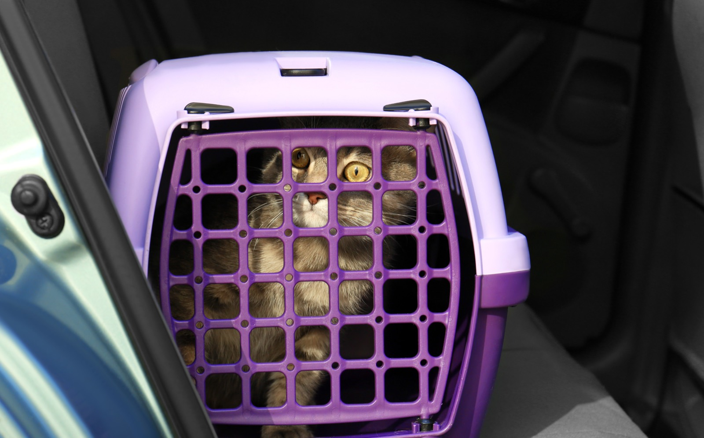

catadoption_pune
catadoption_pune

Short version: a hard carrier with a top that comes off, a covered litter box bigger than the ones in the shop, a small pack of clumping litter, two steel katoris from the kitchen, and whatever the cat was already eating. That is day one. Everything else (the bed, the toys, the fountain, the cute ceramic bowls) can wait a month, and by then the cat will have told you what it actually wants.
The carrier: the one thing to buy properly
Every cat in this house has arrived in the same carrier and gone to the vet in it since. It is a hard plastic box with a door at the front, a door on top, and a top shell that unclips completely from the base. The top door is for a cat that will not walk in. The lift-off shell is for the vet: a frightened cat wedged at the back of a carrier does not come out through a door, so the vet lifts the roof off and examines it where it sits. Same again after neutering, when the cat is groggy and floppy and you are placing it in, not coaxing it. A soft bag with one zip cannot do either of those things, and most of the backpack and bubble carriers sold online cannot either.
Inside it, less than you would think. Pune is hot, and my cats pant on the way to the vet (an exaggeration, but only a small one), so I do not put a pad or a folded towel under them. A pee pad lines the bottom, in case. Sometimes a cardboard scratcher goes in. Sometimes an old T-shirt of mine, which smells of home, and that one matters most if the cat is staying at the clinic for a few hours. A thin cotton cloth over the whole carrier keeps them calmer than any amount of talking. If it is an overnight stay, put a label on the carrier and on any cloth you leave with it. Clinics are busy and things get mixed up.
Cleaning is a brush, water and a pet-safe spray, because the shell comes apart.
Ours is an Amazon Basics two-door one, and it was the cheapest of its kind when we bought it. Most of what else is sold online is a backpack or a bubble carrier, which is cute in a reel and useless at the vet. A carrier is the one thing on this page with no free version. If you are choosing between spending on this and spending on a bed, spend here.
The litter box: covered, and bigger than you think
A nice litter box is half of a cat's happiness, I think. Ours are covered, for two reasons. Three of my four boys are tidy, and one of them, even after neutering, stands up to pee and misses the edge of an open tray. Boys. The cover also keeps the dust in when they dig. Get a large one. Most boxes sold online are small, and a grown indie cat in a small covered box is a cat that turns round, cannot, and goes beside it instead. This is a one-time purchase; buy the big one and keep it clean.
Ours is a Trixie Vico. Check that yours comes with a scoop; if it does not, ours is one with a compartment for small garbage bags, and a slotted kitchen spoon kept for the purpose does the same job.
The free version of the box is a large plastic storage tub with a door cut in the lid, and it works fine. What the tub cannot fix is where you put it. A box in a corner with no way out, or next to the washing machine, or in the passage everyone walks through, will be used less. Somewhere quiet, with two ways in and out, and one box per cat plus one spare if you have more than one.
Litter: buy a small pack first. A cat that has always used one kind of sand may refuse another, so the first pack is a test, not a stock-up. Ours is Pet Pattern's 5 kg pack, low dust and it clumps properly, and the small pack is the whole point in the monsoon. Any clumping litter from the pet shop near you does the job for a first week; keep it in a dabba with a lid, not the open bag. Why small packs matter from June to September is its own page.
Bowls: the katori you already own
Steel. It is what every kitchen here already has, it does not break, and a cat cannot chew it. Two katoris from the kitchen, one for water and one for food, and you are done. I do not see ceramic bowls much in India anyway, and with an indie cat (active, messy, and on a tiled floor) a ceramic bowl is a broken bowl within the month.
If you do buy, two things. Most pet bowls sold online are dog-sized; a cat wants a small, shallow one so its whiskers do not touch the sides. And a skid-free base, or a slightly raised stand, looks more comfortable for them, which is the only reason to pay for a bowl at all. A small steel bowl, somewhere between 100 and 200 ml, is the size to look for. Cats can be finicky eaters, and a small bowl suits the food even if the water gets a big one.
Where the water lives matters more than what it is in. Our maid does jhadu-pocha every morning, so the water bowls sit on a low table with a sheet of brown packing paper under them (the paper Myntra wraps parcels in), because cats spill and paddle and do strange things with water, and this way the floor gets mopped and the water stand does not get moved every single day. Food and water go well away from the litter box. Cats will not eat next to their toilet.
Food: whatever it was eating yesterday
Do not change the food on day one. Ask the rescuer or the previous home what the cat eats and buy that, even if you plan to switch later; a new home and a new diet on the same day is a recipe for a week of loose stools. Switch over ten days or so once the cat is settled, mixing the new into the old.
If it is a kitten, wet kitten food, water beside it, small meals through the day, and never cow's milk. That is its own page with what we buy and how much it costs.
The mess kit, because messes will happen
A new cat in a new flat will miss the box once, throw up a hairball on the one rug you like, or come home from the vet with dirty paws. Four things cover all of it, and we keep all four in one dabba by the door.
Pee pads. They line the carrier, they go under a sick cat's bed, and one under the litter box catches what gets kicked out. Amazon's own leak-proof ones are what we use; folded newspaper under an old cotton cloth is the free version and it is what most of Pune uses.
Pet wipes. For paws after the vet, a dirty bottom, the bit of gravy on the chin. Ours are BarkButler's unscented ones. Cats hate scented wipes, and a cat rarely smells anyway, so there is no need for one. A damp cotton cloth does the same; what you must not use is a baby wipe with fragrance or alcohol, or anything with Dettol in it (why, on the accidents page).
Kitchen towels. The ones we use are Beco's bamboo roll, twenty sheets that rinse and go again, because a paper roll does not survive a week of cat. Any old cotton cloth cut into squares is the free version and honestly the better one.
Garbage bags. Scooped litter goes out daily, and it goes out tied. We use Beco's compostable ones, the medium size, because a week of litter in a plastic bag is a week of plastic in a landfill. Any bag with a knot in it does the job; the compostable one is the choice, not the requirement.
What day one actually looks like
The cat goes under the bed. Or into the wardrobe, or behind the washing machine. This is normal and it is not a sign that anything is wrong. Leave food, water and the litter box where it can reach them without crossing the whole flat, close the door of that one room, and let it come out in its own time. Some come out in an hour. Some take two days. Do not pull a cat out from under a bed.
One thing I have seen with every stray that has come through this house, and there have been many: they use the litter box from the first day. Each and every one. What I do is take every bedsheet, towel and pile of clothes out of the room before the cat arrives, so the only soft, sandy surface in there is the box. Even the most feral cat knows to do its business in sand and cover it, because in the wild that is safety. After a couple of days I put the bedding back, and by then the box smells of them and that is where they go.
The same instinct is why placement matters. A cat wants to eat, drink and dig somewhere it feels safe, with a way out. Outside, the strays we feed will not eat in a messy, noisy spot either. Inside, that means the quiet room, not the passage.
What you do not need yet
A bed: the cat will choose your shirt, or the carrier with the door open, which is a good thing to leave out for the first week anyway. Toys: a crumpled paper ball and a shoelace, for now. A collar: not until the cat knows the house. Treats, grooming brushes, a scratching post, a fountain, the second litter box: all real, all later, and the cat will show you which ones it wants.
The day-one list
☐ Hard carrier, top door, lift-off shell · ☐ Covered litter box, the large one · ☐ One small pack of clumping litter, and a dabba for it · ☐ Two steel katoris · ☐ The food it was already eating · ☐ A scoop, pee pads, wipes, a roll of cloth towels and bags, in one dabba · ☐ One quiet room with the door shut, and the bedding taken out for two days.
Questions? DM us.
We're @catadoption_pune on Instagram — DMs are how everything here works. If your new cat has not eaten or used the box in two days, say so in the DM and we will point you at a vet, not a product.